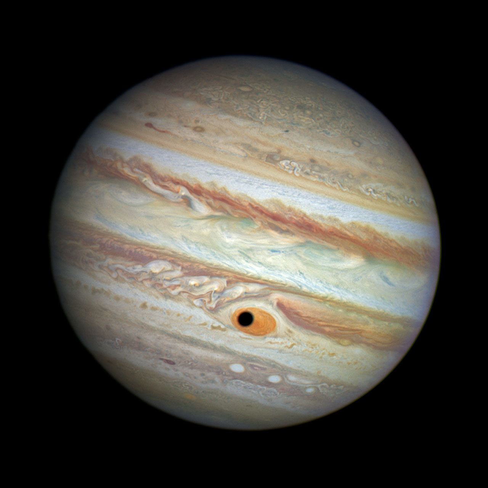

Space Exploration

- There is no set number of people in an astronaut candidate class; NASA selects its candidates on an as-needed basis. To even apply to be an astronaut, candidates must have completed 1,000 hours of flying time in a jet aircraft.
- A spacesuit weighs approximately 280 pounds—without the astronaut—and it takes 45 minutes to put it on.
- Snoopy, from the Peanuts comics, is the astronauts' personal safety mascot.
- Explorer 1, launched on Jan. 31, 1958, was the first artificial satellite sent into space by the United States. It orbited Earth every 115 minutes, and its cargo included a cosmic ray detector designed to measure the radiation environment in Earth's orbit.
- Each space shuttle astronaut is allotted 3.8 pounds of food per day. Foods are individually packaged and stored for ease of handling in zero gravity. Foods are precooked or processed, so as to require no refrigeration, and are either ready to eat or can be simply prepared by adding water or by heating. The only exceptions are fresh fruit and vegetables, which are stowed in the fresh-food locker; without refrigeration, though, carrots and celery must be eaten within the first two days or they will spoil. Available condiments include salt, pepper, taco sauce, hot pepper sauce, ketchup, mayonnaise, and mustard.
- A manned rocket reaches the moon in less time than it took a stagecoach to travel the length of England.
- America's first space station was Skylab, which was longer than a 12-story building and contained almost 12,000 cubic feet of living space.
- Although it may appear to be flying backward, the flag on the shuttle is positioned so as to appear as though it's flying alongside the ship; this is done to be in accordance with the regulation for displaying the U.S. flag on a national vehicle so that the star field is positioned at the front of the vessel (or the nose cone end of the shuttle).
- Flying American flags to space originated with the flight of the first American astronaut, Alan Shepard, in 1961. Elementary students from a Cocoa Beach, Fla., school purchased the flag for Shepard to carry onboard; the flag was rolled up and placed between cables behind Shepard's head inside his Freedom 7 Mercury spacecraft. Onetime NASA Administrator Daniel Goldin said, "The American flags are a patriotic symbol of our strength and solidarity and our nation's resolve to prevail."
- It takes six hours for a space shuttle, aboard a crawler-transporter, to make the trip from the vehicle assembly building to the launch pad preceding a mission.